Steady and Unsteady Flow around Airfoils
Contact: ghosh (at) mcs (dot) anl (dot) gov

Turbulent Flow around a Pitching - Plunging Airfoil at Low Reynolds Number
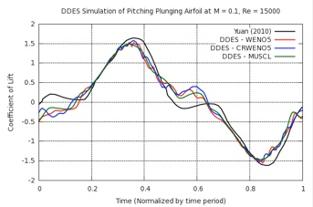
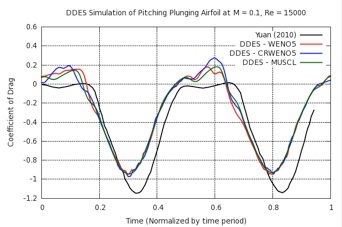
Lift and Drag vs. Time for one pitch-plunge cycle for a 3rd order MUSCL, 5th order WENO & 5th order CRWENO
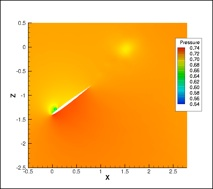
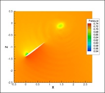
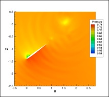
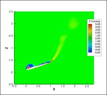
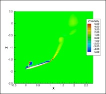
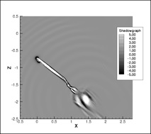
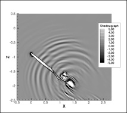
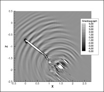
Pressure, Vorticity Magnitude and Shadowgraph (Laplacian of Density) contours for the 3rd order MUSCL, 5th order WENO and 5th order CRWENO schemes - The CRWENO scheme shows an improved resolution of the shed vortices as well as the acoustic waves.

The algorithm is validated for a pitching SC1095 airfoil in a wind tunnel at a Reynolds number of 3.92 million and freestream Mach number of 0.302. The wind tunnel height was five times the chord. Results from the 3rd order MUSCL, 5th order WENO and 5th order CRWENO schemes are compared with experimental results and a good agreement is seen.
The CRWENO scheme has been incorporated into a finite volume Navier-Stokes solver on overset, curvilinear meshes. A 2nd order Backward Differencing with dual time stepping or the 3rd order explicit TVD Runge-Kutta is used for time-marching. Roe’s flux differencing is used for upwinding. Reynolds Averaged Navier-Stokes (RANS) and Delayed Detached Eddy Simulations (DDES) are used with the Spalart - Allmaras turbulence model for turbulent flows. The algorithm is validated for steady and unsteady flow over airfoils and is seen to perform robustly on overset and moving mesh systems.
Steady, Transonic, Turbulent Flow over the RAE 2822 Airfoil
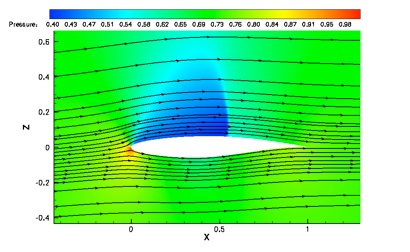
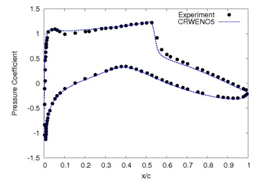
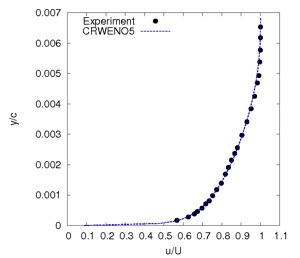
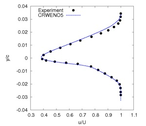
The steady flow over a RAE 2822 airfoil is solved. The flow conditions correspond to “Case 6” in of the experimental data (AGARD-AR-138), obtained by wind tunnel testing. The coefficient of pressure on the airfoil surface and the velocity profiles in the boundary layer and wake are compared. A good agreement is observed between the numerical and experimental results.
Flow around a pitching and plunging NACA 0005 airfoil is simulated, which is representative of the flow around a flapping wing. While a low order accurate scheme is sufficient to predict integrated lift and drag variation with time, a high resolution and high order accurate scheme is able to capture the finer flow details like the shed vortices and acoustic waves that are generated from the interaction of the vortices with the airfoil.
Application to Overset Meshes
Steady Flow around SC 2110 Airfoil + Slat in Wind Tunnel
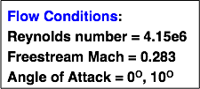
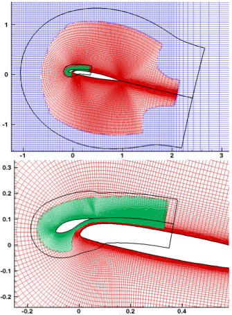
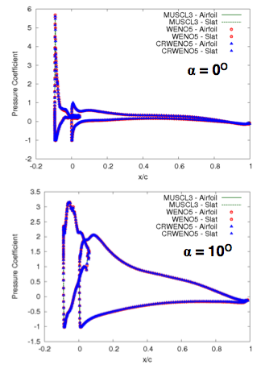
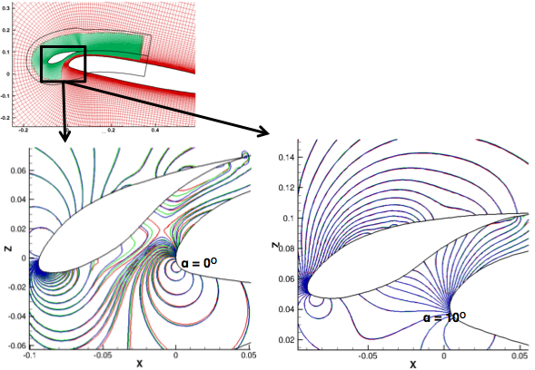

Dynamic Stall of a SC1095 Airfoil in a Wind Tunnel
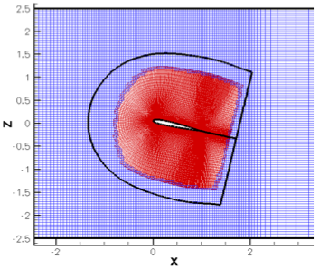
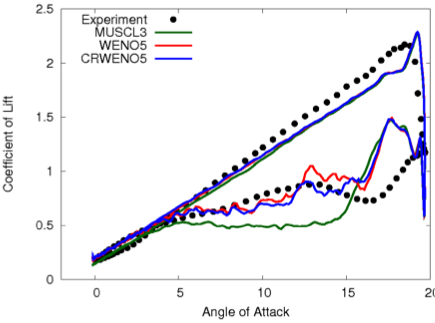
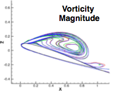
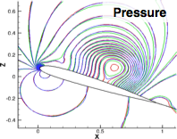
The steady flow around the SC 2110 airfoil with a leading-edge slat in a wind tunnel is solved to verify the CRWENO5 scheme for overset mesh systems. A good agreement is seen with results obtained by non-compact schemes (3rd order MUSCL and 5th order WENO schemes).
Pressure contours in the area between the slat and the main airfoil, characterized by high flow gradients: 3rd order MUSCL (green), 5th order WENO (red) and 5th order CRWENO (blue). A good agreement is seen and contours are observed to be smooth across the overlap between the slat and airfoil grids.